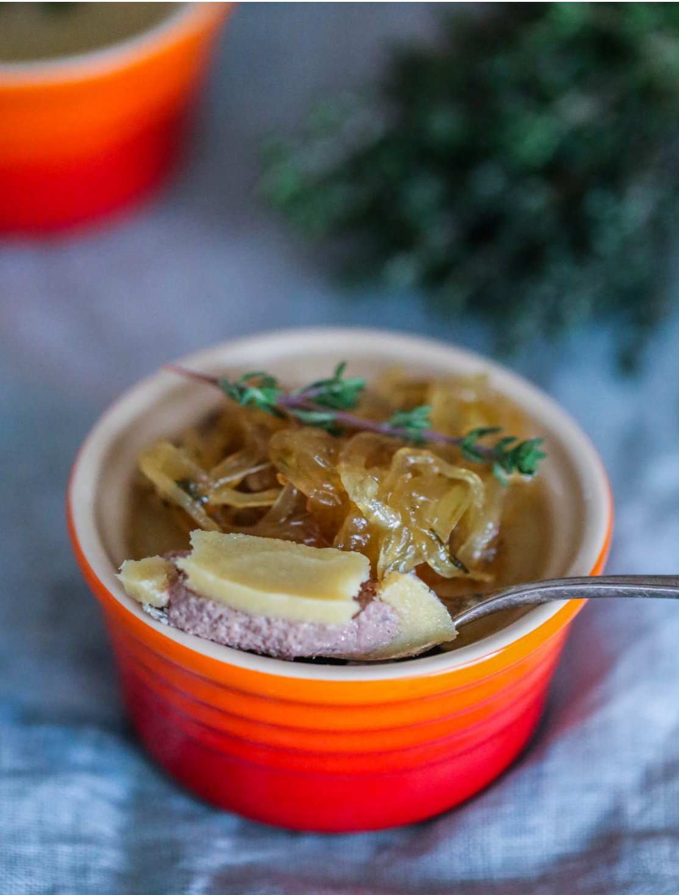

Отношение к субпродуктам противоречивое. С одной стороны, их великое множество, и иногда люди просто не знают, как их готовить. С другой, зачастую психологически субпродукты воспринимаются как какие-то «отходы». Нам хотелось бы рассказать о субпродуктах подробнее, чтобы развеять предубеждение, если оно у вас есть. Они ценны и как источники пользы для здоровья (большинство богаты железом и витаминами), и как великолепные ингредиенты потрясающих блюд.
Думается, действительно важно, чтобы животное содержалось в гуманных условиях, а раз уж его забили, то мы должны правильно относиться к нему, с уважением, и использовать все полностью. Нет «плохих» частей, есть неумение их правильно готовить.
Особенно в использовании субпродуктов преуспели жители Азии. Азиатскую кухню отличает мастерство в приготовлении субпродуктов, во многом за счет соусов с яркими вкусами благодаря соевому соусу, имбирю, перцу чили, уксусу и специям.
Когда речь идет о субпродуктах, важно искать качественные, лучше органические или фермерские. Всегда отдавайте предпочтение субпродуктам от молодых животных — они мягче, нежнее, быстрее готовятся, а еще в них меньше накапливающихся с возрастом вредных веществ.
Правила выбора здесь те же, что и в случае с мясом: визуальная свежесть, красивый внешний вид, отсутствие неприятных запахов, темных пятен.
Печень невероятно полезна (содержит рекордное количество легко усваивающегося железа, витамины группы В) и при правильном приготовлении бесподобна на вкус. Из печени делают паштеты, колбасы, жарят в виде стейков, готовят с ней салаты.
При приготовлении любой печени важно помнить, что буквально пара лишних минут термической обработки может безвозвратно испортить этот продукт. Печень готовят быстро, так, чтобы она оставалась розоватой внутри. Передержанная печень становится сухой и неприятной на вкус.
Говяжья печень особенно пахучая, поэтому перед приготовлением ее традиционно вымачивают в молоке. Если вы и ваши близкие не любите этот характерный запах, рекомендуем заменять в рецептах говяжью печень телячьей или куриной.
Идея блюда: разделите куриную печень пополам, удалив жесткие протоки, слегка поперчите и заверните каждый кусочек в половину длинного ломтика соленого подкопченного бекона. Пожарьте на гриле или на решетке под верхним грилем духовки недолго, лишь до светло-золотистого цвета бекона, подавайте с соусом наршараб.
Для нас это практически синоним праздника. Наиболее популярен в кулинарии говяжий язык, который традиционно отваривают и едят в холодном виде с горчицей или хреном или подают горячим с картофельным пюре. Нежнее и вкуснее, на наш взгляд, язык телячий.
В отличие от премиального мяса, язык, как и другие части с высоким содержанием коллагена, только выигрывает от заморозки, потому что становится мягче.
Идея блюда: замените в традиционном оливье говядину или колбасу отварным языком и наслаждайтесь новым изысканным вкусом!
По сути, сердце — это мышца, поэтому у него такой выраженный «мясной» вкус, к тому же совершенно нейтральный запах. Но так как сердце постоянно работает при жизни животного, мышца эта очень жесткая. Обработайте сердце, довольно крупно нарежьте и обжарьте вместе с луком, затем добавьте бульон или воду и тушите на самом слабом огне более часа, до полной мягкости.
Куриные сердечки чудо как хороши в сметанном соусе. Мягкими они становятся после 35–40 минут тушения.
Любое сердце — отличный белковый продукт для стир-фрая: отварите его до мягкости, нарежьте соломкой, быстро обжарьте с овощами и заправьте азиатским соусом.
Идея блюда: нарежьте обжаренные и потушенные кусочки говяжьего или телячьего сердца соломкой и запеките в кокотницах, смешав с соусом бешамель и сметаной — получится оригинальный жюльен.
В случае с почками крайне важна правильная подготовка: во-первых, нужно брать только охлажденные, а не замороженные почки (заморозка непоправимо меняет их текстуру), и без зеленых пятен от желчи; а во-вторых, их нужно очень тщательно обработать, удалив абсолютно весь жир, внутреннюю капсулу, все протоки, затем вымочить в молоке не менее суток. Самые вкусные почки — бараньи и кроличьи, их даже не нужно вымачивать.
Идея блюда: обработайте, отварите и обжарьте любые почки, пропустите их через мясорубку, смешайте с рубленым яйцом и зеленым луком. Используйте как начинку для пирожков из слоеного теста.
Куриные желудки очень плотные и жесткие, но становятся вкуснейшими, если их долго томить на достаточном количестве жира с луком, особенно когда в конце добавите сметану и подадите с отварной гречкой или рисом.
Перед приготовлением желудки нужно тщательно промывать и удалять возможно оставшиеся кусочки жесткой темно-желтой «кожицы» с внутренней стороны.
Не случайно французы называют его «фуа-гра для бедных». Без хорошей говяжьей мозговой косточки немыслим наваристый бульон, особенно для борща.
Идея блюда: приготовить лук конфи, медленно потомив луковицы с солью на оливковом или сливочном масле на минимальном огне в течение 40–60 минут. Запечь мозговые кости в очень горячей духовке 3–4 минуты. Поджарить ломтики дрожжевого хлеба. Выложить лук конфи поверх костного мозга и подавать с тостами.
Говяжьи (бычьи) хвосты продаются очищенными, нужно удалить весь жир и разрубить по суставам на кусочки. Костей в хвостах много, как и соединительной ткани, но от этого они только вкуснее. Готовятся хвосты путем длительного тушения — сначала куски хвостов обжариваются, затем долго, несколько часов, тушатся.
Замочить 500 г нарезанной стейками толщиной 1 см телячьей печени в молоке на полчаса. Обжарить на большой сковородке 100 г нарезанного «мясного» бекона с горстью листочков шалфея до хруста, переложить шкварки на бумажное полотенце. Обжарить на жире от бекона 3 луковицы, нарезанные полукольцами, до золотистого цвета, переложить в миску. Обвалять обсушенные ломтики печени в муке с солью и перцем и быстро обжарить на средне-сильном огне примерно по 2 минуты с каждой стороны, чтобы печень осталась розовой внутри. Подавать с картофельным пюре, выложив сверху жареный лук и посыпав беконом.
Тщательно обработать 6 почек молодых барашков, разрезав их вдоль пополам. Смешать в миске 3 ст. л. муки с 1 ч. л. кайенского перца, 1 ч. л. горчичного порошка, солью и черным перцем по вкусу. Разогреть в большой сковородке сливочное или топленое масло. Обвалять половинки почек в муке со специями и жарить на очень горячем масле по 2 минуты с каждой стороны. Влить вустерский соус по вкусу и 1/2 стакана куриного бульона, все прогреть, помешивая. Переложить почки на поджаренные тосты, а соус в сковородке уварить до загустения. Полить почки горячим соусом и сразу подавать.
Обжарить на оливковом масле в большой чугунной кастрюле мелко нарезанные 2 луковицы, 2 стебля сельдерея и 4 морковки с добавлением пары лавровых листов и веточки розмарина до мягкости, 15–20 минут. Разогреть духовку с противнем до 220 °С, выложить на горячий противень 2,5 кг говяжьих хвостов, нарезанных на кусочки по позвонкам, посолить, сбрызнуть оливковым маслом и запекать до румяной корочки 20 минут, затем достать и убавить температуру до 170 °С. К овощам в кастрюле добавить 2 ст. л. с горкой муки, влить 2 банки (800 г) консервированных помидоров и 300 мл сухого красного вина. Выложить хвосты, перемешать, накрыть и тушить 4 часа. С готового рагу аккуратно снять лишний жир, выбрать кусочки хвостов, немного остудить и руками отделить мясо, кости выбросить. Мясо вернуть в кастрюлю с соусом, посолить по вкусу и подавать с полентой, посыпав рубленой зеленью петрушки и лимонной цедрой.